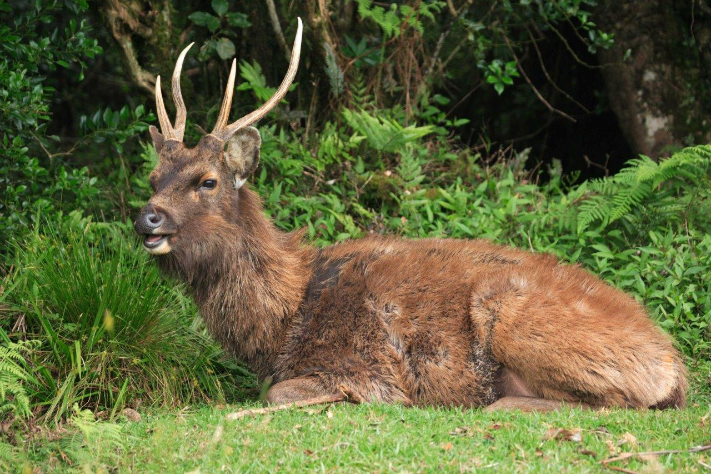

SRI LANKAN WILD LIFE
Sri Lanka, a tropical jewel nestled in the Indian Ocean, boasts a remarkably diverse and enchanting wildlife that reflects the island's rich biodiversity and ecological significance. From the lush rainforests to the coastal wetlands, Sri Lanka is home to a myriad of unique species, many of which are endemic to the region. Elephants majestically roam through national parks, leopards stealthily navigate dense foliage, and vibrant bird species paint the skies.
Minneriya National Park


Minneriya National Park is located in Sri Lanka's North Central Province, 182 kilometers from Colombo. The major cities closest to Minneriya National Park are Habarana and Polonnaruwa. The renovated, vast ancient Minneriya Rainwater Reservoir that irrigates a considerable area of the district of Polonnaruwa is the focal point of the Minneriya National Park. Minneriya National Park, which is part of the elephant corridor that connects Kaudulla and Wasgamuwa National Parks, provides visitors with the opportunity to see elephant herds all year. May to October is the best period to visit Minneriya National Park in view of the world-famous Great Elephant Gathering of the Asian wild elephants. During this period, herds of up to 350 elephants are seen at the 8,890-hectare park within a few square kilometers of the Minneriya Tank. According to some reports, there are as many as 700 elephants. In August and September each year, during the dry season, wild elephants migrate from Wasgamuwa National Park to Minneriya National Park in search of food and shelter. Tourists visit Minneriya National Park largely because of elephants, especially in the dry season.
Sinharaja Forest Reserve


Sinharaja Forest, a UNESCO World Heritage Site in Sri Lanka, is a verdant jewel teeming with biodiversity. Spanning 8,864 hectares, this tropical rainforest stands as a testament to the island's ecological richness. A treasure trove of endemic flora and fauna, Sinharaja is home to elusive species like the purple-faced langur and the Sri Lankan leopard. Towering trees, draped in lush greenery, create a majestic canopy, sheltering myriad life forms. The forest's importance extends beyond its borders, contributing to the nation's water resources and climate regulation. As a living laboratory for scientists and a haven for nature enthusiasts, Sinharaja Forest epitomizes the delicate balance between human and environmental well-being. Its preservation is vital for sustaining the intricate web of life that thrives within its emerald embrace.
Udawalawe National Park


Udawalawe National Park is a national park located in the Sabaragamuwa and Uva Provinces of Sri Lanka. The park was created to provide a sanctuary for wild animals displaced by the construction of the Udawalawe Reservoir on the Walawe River, as well as to protect the catchment of the reservoir. The reserve covers 30,821 hectares (119.00 sq mi) of land area and was established on 30 June 197212. The park is home to a large population of Sri Lankan elephants, water buffalo, sambar deer, and crocodiles. The park is also an important habitat for water birds
Horton Plains National Park


Horton Plains National Park, nestled in the central highlands of Sri Lanka, unfolds a captivating landscape at an elevation of over 2,100 meters. This UNESCO World Heritage Site is a testament to nature's artistic prowess. Sprawling across 3,160 hectares, the park boasts unique ecosystems, including cloud forests and grasslands, fostering diverse flora and fauna. The iconic World's End precipice unveils a breathtaking panorama of mist-covered valleys, making it a sought-after destination for hikers and nature enthusiasts. Baker's Falls, a cascading marvel, adds to the park's allure. Home to elusive wildlife such as sambar deer and the endemic purple-faced langur, Horton Plains stands as a sanctuary of biodiversity. The cool, crisp air and surreal landscapes make it a haven for those seeking serenity amidst nature's grandeur. Preserving Horton Plains is paramount not only for its ecological significance but also for the spiritual connection it fosters between visitors and the untamed beauty of the highlands.
| National park | Animal name | Interesting fact | Image |
|---|---|---|---|
| Minneriya National Park | Hanging Parrot | The Sri Lankan Hanging Parrot, scientifically known as Loriculus beryllinus, is a charming and distinctive bird endemic to the island nation of Sri Lanka. Recognized for its vibrant plumage, this small parrot displays a brilliant emerald green hue with a contrasting red throat patch. As its name suggests, the Sri Lankan Hanging Parrot is often seen hanging upside down while feeding on nectar from blossoms. Preferring the canopies of dense forests, it adds a splash of color to the lush greenery of Sri Lanka's natural landscapes. The species thrives in a variety of forested habitats, showcasing the remarkable biodiversity and avian wonders found on this tropical island. |  |
| Sinharaja National Park | Hump Snout Lizard | Hump Snout Lizard (Lyriocephalus scutatus), Sri Lanka's largest endemic agamid, with the characteristic knob on the top of its nose is considered one of the most spectacular of the world. It can change its body color from cinnamon brown to green, depending on the surroundings and its mood. The defensive posture of this species is the display of the deep red colour of the mouth. | |
| Udawalawe National Park | Elephants | Interesting fact about Udawalawe elephants is that the park has become a vital sanctuary for orphaned elephant calves. The Udawalawe Elephant Transit Home, located within the park, is a facility dedicated to the rehabilitation and release of orphaned elephants back into the wild. |  |
| Hortain Plains National Park | Sambar Deer | The most frequent site of wildlife at Horton Plains are herds of Sambar Deer. However the growth population of Sambar Deer has resulted in the increase of number of Leopards. |  |